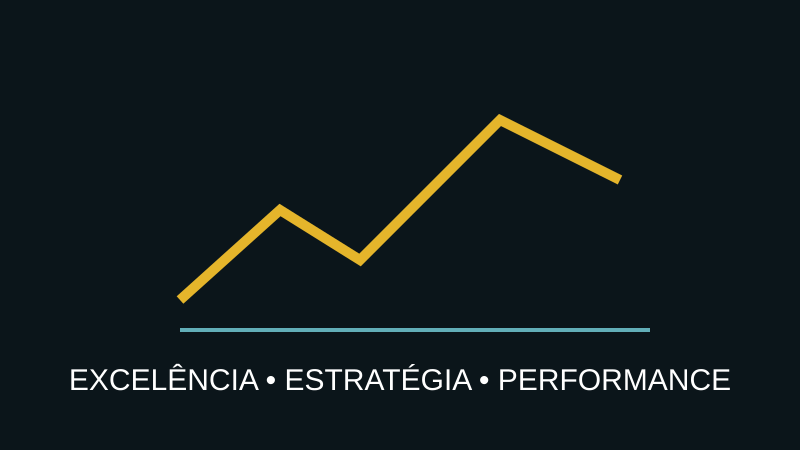

ESTRATÉGIA • GOVERNANÇA
Excelência Operacional Estratégica
Transforme melhoria contínua em um sistema de gestão conectado à estratégia e aos resultados.

Melhoria precisa de direção
Projetos isolados podem gerar bons resultados e, ainda assim, não mudar a empresa. A excelência operacional estratégica cria critérios para selecionar, priorizar, governar e acompanhar um portfólio de iniciativas.
O sistema
O trabalho conecta maturidade, objetivos, indicadores, oportunidades, business cases, governança, savings tracking e roadmap de transformação.
Entregáveis
- Operational Excellence Assessment;
- mapa estratégico de oportunidades;
- portfólio e matriz de priorização;
- KPI Tree e dashboard executivo;
- modelo de governança;
- Master Plan de Excelência Operacional.